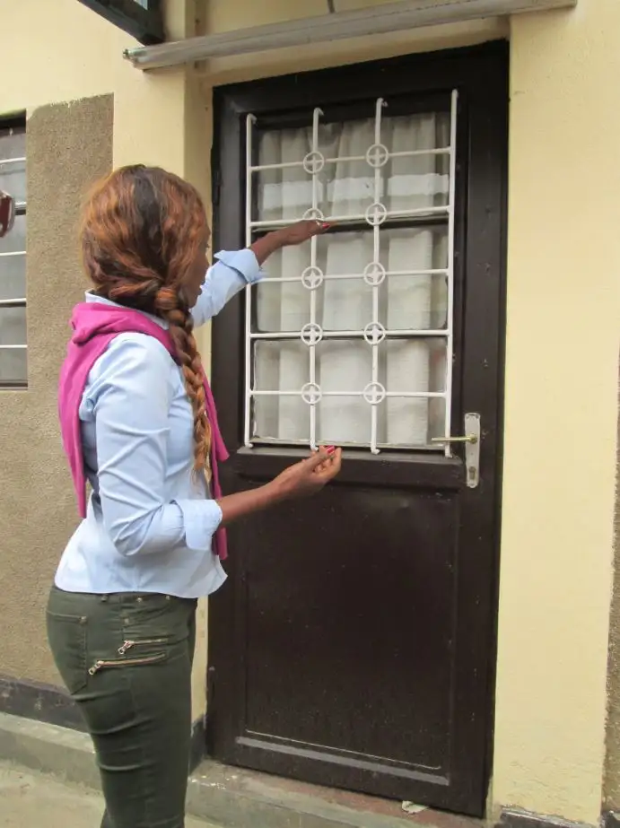

NEW YORK, N.Y. — The message Immaculee Ilibagiza will bring to Fargo next month took root in her heart while huddling in a bathroom with seven other women for three months in 1994, at the height of the Rwandan genocide.
“It’s really about forgiveness and to realize that forgiveness does not mean making yourself a victim,” she says. “Forgiveness belongs to you, the person who’s been hurt. And sometimes, reconciliation follows.”
Ilibagiza has shared in North Dakota previously her powerful story of finding refuge during the horrific slaughter of loved ones — including most of her family — during the massive bloodshed that took place in her country while she was home on break from college.
She’s also detailed the story in her memoir, “Left to Tell.”
Just before speaking in Grafton in 2012, she’d shared that one need not endure the horror she did to find the message relevant. “You come to realize that there is some pain that is hidden, no one knows about it,” she’d said. “And when you don’t have the support of the society — that can hurt even more.”
As her life attests, forgiveness in any situation is possible.
Residing in America now for 20 years, Ilibagiza remains connected to Rwanda, leading pilgrimages there each year, while continuing to share her message of hope here.
In Fargo, she’ll lead a retreat to present the message she says many long to hear.
“When I share my story, people often say, ‘You went through that and I think my life is over?’ ” she says. “They say, ‘If you can do this, I can do this. If you survived, I can get through this.’ And that brings me so much joy.”
Brian Herding helped bring Ilibagiza to Grafton while working at St. John the Evangelist Church there, and he felt inspired to bring her to his current parish, St. Anthony’s.
“Immaculee’s story of the way she pulled through the holocaust, when people hear it, they walk away with their hearts softened, with a stronger sense of God’s mercy, with a stronger sense of the importance of forgiveness,” he says. “It’s really a universal message.”
Herding has been to several of Ilibagiza’s retreats and experienced a pilgrimage she led in Kibeho, Rwanda, in 2012. He then encouraged his former colleague, Tammy Campbell, now also of Fargo, to travel there with Ilibagiza in 2014, on the 30th anniversary of the genocide.
“When you meet (Immaculee), there’s a just a presence about her. You see a radiance; she just shines,” Campbell says. “It’s not just within, it’s without, and after the retreat I remember thinking, it’s very apparent she’s been touched by God, and it’s very apparent she was left to tell her story.”
During her time in Kibeho, among the sights she visited, Campbell took in the genocide memorial, including videos of the footage from the slaughter, along with skulls and bones of the victims.
The story, Campbell says, is, “riveting,” given “the extreme hatred and evil (the people) experienced, then turning it around and experiencing the forgiveness and love.”
“I’ve often said,” she adds, “that the world needs to look at Rwanda, because if they can heal, it’s possible for any person, any situation, to heal.”
Ilibagiza says her message, though borne in Africa in the mid-1990s, speaks to our lives here and now, and it’s really about love.
“If you open the door to hatred, so many bad things can happen,” she says. “Nobody wins in hatred. In a moment of selfishness, anger can blind us to the truth, and in the consequences of what can happen as a result, everyone loses.”
But love can heal even the deepest hate, Ilibagiza says. “People are sensitive to love. I’ve seen the worst killer lose all his ‘weapons,’ when I told him I forgave him,” she says. “He went down, he covered his face (in regret). If we sow kindness … it can change everything.”
IF YOU GO:
What: Retreat led by Immaculee Ilibagiza
When: Friday and Saturday, May 4 and 5; Friday: 4 to 9 p.m.; Saturday, 8:30 a.m. to 12:10 p.m.
Where: St. Anthony’s Church, 710 10th Street South, Fargo
Cost: $57; $76 with guest
Contact: Annette Micek (annette@immaculee.com) or locally, Joe Hendrickx, 701-237-6063, or
Online: https://www.immaculee.com/collections/retreats/products/fargo-nd-retreat-may-4-5-2018-with-immaculee
[For the sake of having a repository for my newspaper columns and articles, I reprint them here, with permission, a week after their run date. The preceding ran in The Forum newspaper on April 14, 2018.]